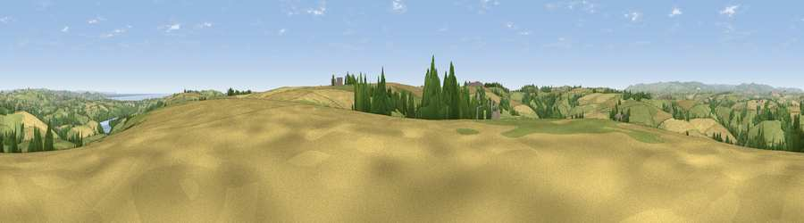

Viewpoint near Cornworthy
#5693 in England · top 15% of its area beats it · near CornworthyThe view, rendered

A 360° render of this exact spot computed from the terrain model, tree cover and land cover — summer colours, afternoon light, calibrated against photographs of famous viewpoints. Real trees, hedges and buildings will differ in detail.
The panorama
Grey silhouette: terrain skyline in each direction (720 bearings, Earth curvature and refraction included). Dashed green: skyline with trees (+15 m) and buildings (+8 m) as obstacles. Blue strip: how far the ground is visible on each bearing.
Where the view opens
Wedge length = distance to the farthest visible ground on that bearing (vegetation-aware). Rings at 10, 25 and 50 km.
What fills the view
52% grassland · 31% cropland · 13% woodland · 2% water · 2% built-up
Angular shares of the visible panorama (visual magnitude), not map area. Landscape diversity 0.49 (0–1 Shannon).
Key numbers
More beautiful places nearby
The staircase of upgrades: each row has a higher view potential than everything closer. Driving times are estimates from straight-line distance, calibrated against real road routing — check an actual route before setting out.
| Place | Direction | Drive | Score |
|---|---|---|---|
| Viewpoint near Dittisham | SE · 1 km | ~3 min | 74.8 |
| Viewpoint near Cornworthy | S · 1 km | ~3 min | 75.2 |
| Viewpoint near Dartmouth | SE · 5 km | ~11 min | 79.2 |
| Viewpoint near Kingswear | SE · 6 km | ~12 min | 80.2 |
| Viewpoint near Kingswear | ESE · 7 km | ~15 min | 81.7 |
| Viewpoint near Kingswear | ESE · 8 km | ~16 min | 83.8 |
| Viewpoint near Stokeinteignhead | NNE · 18 km | ~32 min | 84.1 |
| Viewpoint near East Prawle | SSW · 19 km | ~32 min | 84.6 |
50.37126, -3.63429 · source: screening · position refined by local search. Computed location — check access rights before visiting.